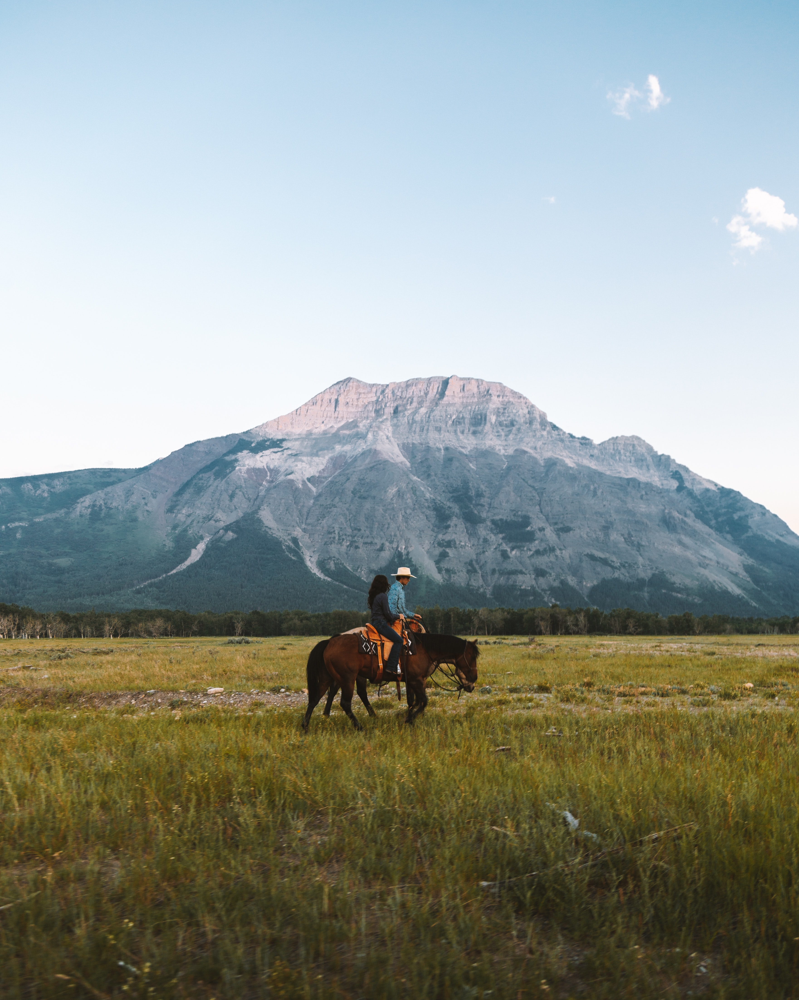
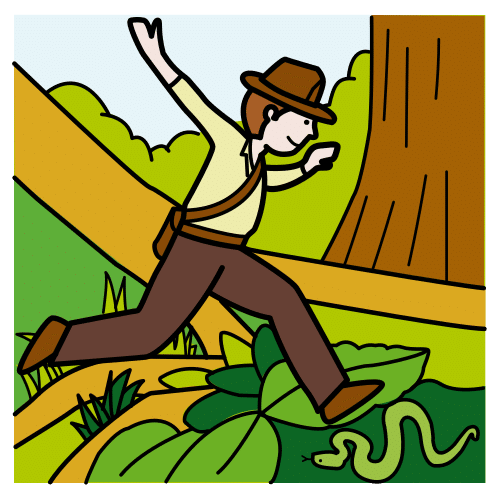
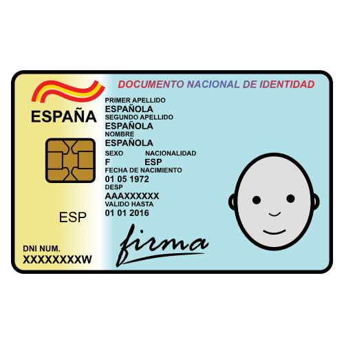
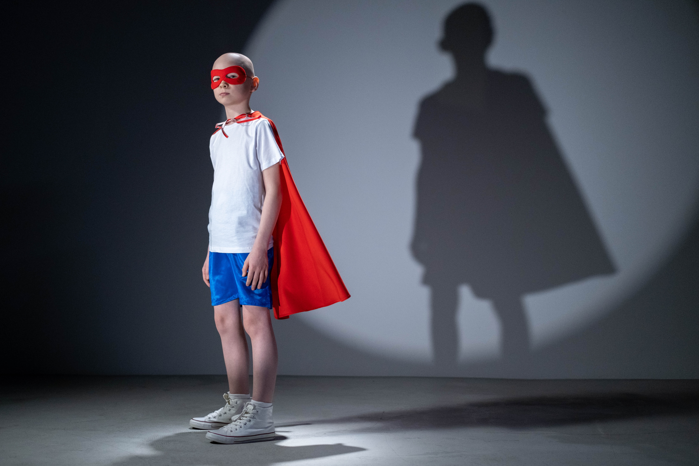

Diccionario Diccionario
Adjetivo calificativo

Definición
Adjetivo que modifica al sustantivo o se predica de él y expresa generalmente cualidades o propiedades de lo designado por el nombre. Los adjetivos calificativos nos ayudan a describir a las personas.
Ejemplo:
El perro es marrón. (Marrón es el adjetivo calificativo)
Aficiones

Definición
Actividad que se realiza habitualmente y por gusto en ratos de ocio.
Ejemplo:
Algunas de sus aficiones son montar a caballo y dibujar.
Atribuir

Definición
Señalar o asignar algo a alguien como de su competencia.
Ejemplo:
A los superhéroes se les atribuyen poderes especiales
Cualidad
Definición
Calidad, condición o naturaleza de algo o de alguien.
Ejemplo:
Una de sus cualidades es que puede desplazarse muy rápido de un sitio a otro.
Desafío

Definición
Enfrentarse a las dificultades con decisión.
Ejemplo:
Subir al pico de la montaña era un desafío, pero con esfuerzo, lo consiguió.
Describir

Definición
Representar o detallar el aspecto de alguien o algo por medio del lenguaje.
Ejemplo:
En la descripción de los niños no debe faltar cómo tiene el pelo, su altura o la ropa que lleva.
Experiencias

Definición
Hecho de haber sentido, conocido o presenciado a alguien o algo.
Ejemplo:
Tuvo la experiencia de viajar en barco.
Identidad

Definición
Conjunto de rasgos propios del individuo o de una colectividad que los caracteriza frente a los demás.
Ejemplo:
La identidad se desarrolla desde muy temprana edad, podemos decir si es calmado, más llorón, etc.
Oculta

Definición
Escondido ignorado, que no se da a conocer ni se deja ver ni sentir.
Ejemplo:
Clark Len, tenía una identidad oculta, era periodista y también Superman.
Punto débil
Definición
Aspecto o parte más vulnerable de alguien o de algo.
Ejemplo:
Su punto débil es la cocina, se le da fatal.